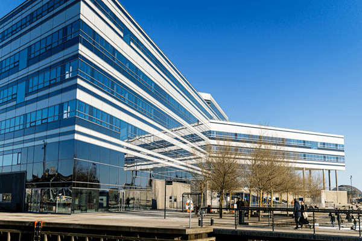

🌟 企業理念
株式会社ファンタジアは、創造力とテクノロジーの融合によって、社会に新たな価値を届けることを使命としています。 私たちは、想像の翼を広げ、誰もが夢を描ける未来の実現を目指します。
🎯 ビジョン
「架空を現実に変える力を持つ企業」 ファンタジアは、Web制作を通じて、物語のような体験と、 心に残るデザインを提供し続けます。すべての人に、創造の喜びと発見の瞬間を届けることが私たちの願いです。
🧭 ミッション
- クライアントの想いを形にする、柔軟で丁寧なWeb制作
- 社会に貢献するコンテンツの創出
- チームの個性と多様性を尊重し、共に成長する文化の醸成
📜 沿革
- 2008年：株式会社ファンタジア設立。Web制作を中心とした創造的なサービスを開始。
- 2012年：架空企業としてのブランドコンセプトを確立。「物語のあるWeb」をテーマに活動を展開。
- 2016年：社内にクリエイティブチームを設置。デザインと技術の融合を強化。
- 2020年：全国の架空企業とのコラボレーションを開始。架空業界の発展に貢献。
- 2025年：新潟県に本社を移転。より自然に近い環境で創造力を育む体制へ。
👤 代表挨拶
株式会社ファンタジアのホームページをご覧いただき、誠にありがとうございます。 私たちは「架空であること」を強みに、自由な発想と柔軟な対応力で、Web制作の可能性を広げてまいりました。 現実の枠にとらわれず、物語のような体験を届けること。 それが、私たちファンタジアの使命です。 これからも、皆さまの想像力を刺激し、心に残るコンテンツを創り続けてまいります。 今後とも、株式会社ファンタジアをどうぞよろしくお願いいたします。
代表取締役 山田 たろうでん
📍 所在地・アクセス情報
- 住所：〒950-0088 新潟県新潟市中央区万代
- 概要：万代は、新潟県新潟市中央区の町字。現行行政地名は万代一丁目から万代六丁目。
- アクセス：新潟駅から中央区万代までは、徒歩で約15分ほどの道のりです。駅北口（万代口）を出てまっすぐ進むと、ショッピングやグルメを楽しめる賑やかな万代エリアに到着します。道中には屋根付きの歩道もあるので、天候を気にせず歩くことができます。ゆっくりと街並みを楽しみながら散策するのに最適な距離です。